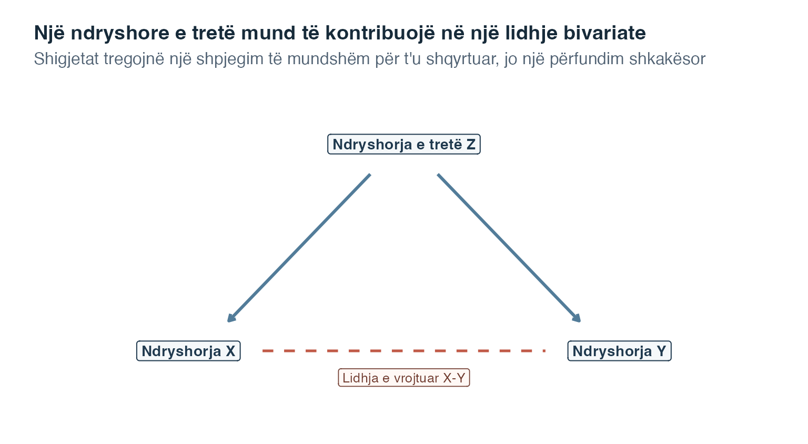
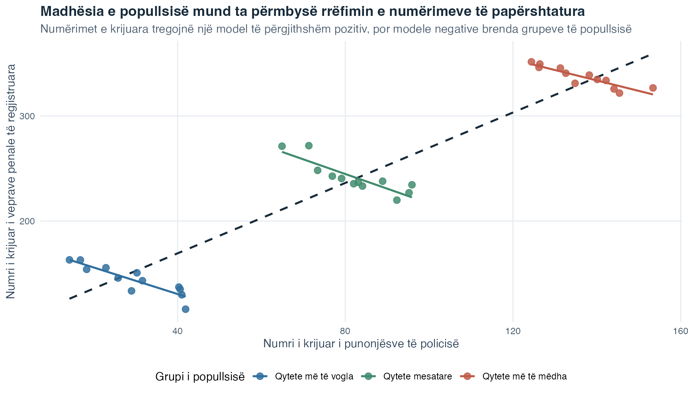
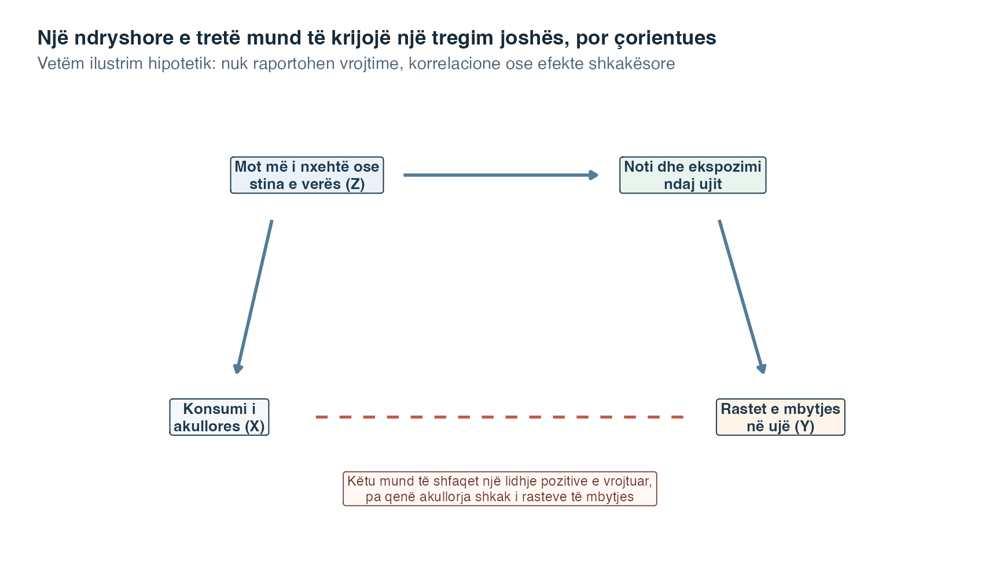
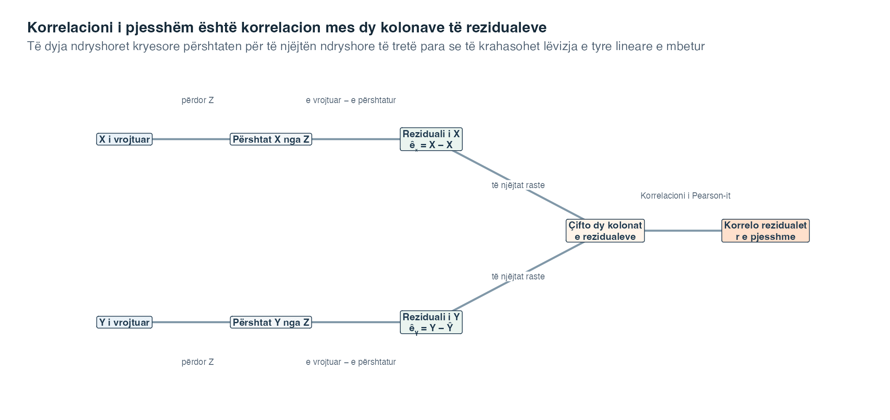
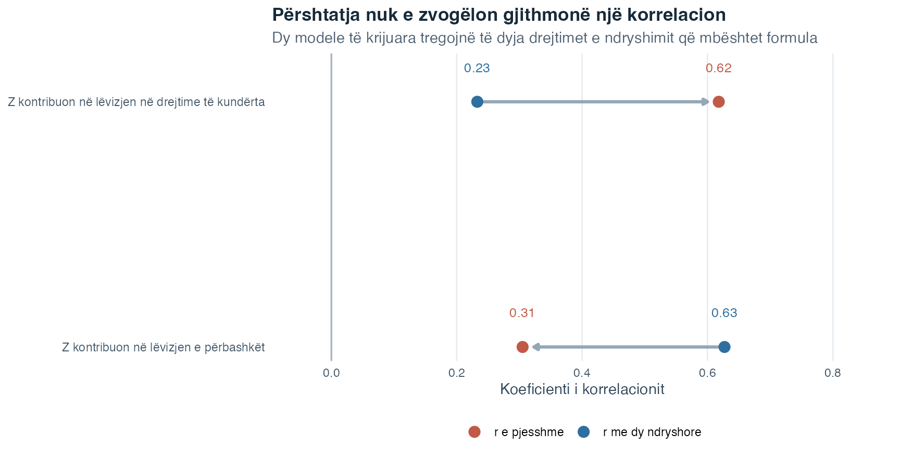

Fleta e ushtrimeve
Zgjidh PDF për shtypje ose Word për redaktim.
Hyrje në Statistikë · Tema 6
Tema 4 prezantoi korrelacionin bivariat, domethënë një korrelacion që llogaritet për dy ndryshore. Tema 5 prezantoi rezidualin, ndryshimin mes një vlere të vrojtuar dhe vlerës së përshtatur nga një vijë regresioni. Korrelacioni i pjesshëm i lidh këto ide.
Imagjino se koha javore e ushtrimit dhe pikët e arsyetimit rriten së bashku. Tani supozo se studentët me përgatitje paraprake më të fortë priren edhe të ushtrohen më shumë, edhe të marrin pikë më të larta. Korrelacioni fillestar mes dy ndryshoreve mbetet një përshkrim i saktë i çifteve të vrojtuara, por ai përmbledh disa rrugë njëherësh. Një pyetje e dobishme vijuese është nëse ushtrimi dhe arsyetimi lëvizin ende së bashku pasi të jenë përfaqësuar lidhjet e tyre lineare me përgatitjen paraprake.
Mendo se ndryshoret \(X\) dhe \(Y\) janë të korreluara. Një ndryshore e tretë \(Z\) mund të lidhet gjithashtu me të dyja. Korrelacioni bivariat \(r_{XY}\) përmbledh gjithë lëvizjen lineare që shihet mes \(X\) dhe \(Y\), duke përfshirë lëvizjen që ato ndajnë me \(Z\). Një korrelacion i pjesshëm shtron një pyetje më të ngushtë:
Pyetja udhëzuese: Sa fort lidhen në mënyrë lineare \(X\) dhe \(Y\) pasi është marrë parasysh pjesa lineare e lidhur me \(Z\)?
Shprehja është marrë parasysh ka rëndësi. Përshtatja statistikore nuk e mban fizikisht \(Z\) konstante, nuk e heq një shkak dhe nuk rikrijon një eksperiment. Ajo përdor një model për të ndarë pjesën lineare të secilës ndryshore të matur që lidhet me \(Z\) nga pjesa që nuk përshtatet nga \(Z\).
Këtë temë mund ta shohësh si tri pyetje të njohura të vendosura me radhë:
| Pyetja | Mjeti i prezantuar më parë | Çfarë tregon mjeti |
|---|---|---|
| A lëvizin së bashku \(X\) dhe \(Y\) në një model drejtvizor? | Korrelacioni i Pearson-it nga Tema 4 | Lidhjen e papërshtatur mes dy ndryshoreve |
| Çfarë vlere të \(X\) ose \(Y\) do të parashikonte një vijë e përshtatur nga \(Z\)? | Regresioni i thjeshtë nga Tema 5 | Pjesën e secilës ndryshore kryesore që përfaqësohet nga \(Z\) |
| A lëvizin ende së bashku dy pjesët vrojtuar-minus-përshtatur? | Korrelacioni i pjesshëm në këtë temë | Lidhjen lineare që mbetet pasi të dyja ndryshoret përshtaten për \(Z\) |
Rreshtat nuk paraqesin tri analiza që konkurrojnë me njëra-tjetrën. Ata formojnë një zinxhir të vetëm. Fillimisht përshkruajmë lidhjen fillestare, pastaj përdorim dy vija regresioni për ta bërë të dukshme përshtatjen dhe në fund korrelojmë atë që mbetet. Nëse e mban parasysh këtë zinxhir, formulat më poshtë do të duken shumë më pak të mistershme.
Raporto si korrelacionin fillestar bivariat, ashtu edhe korrelacionin e pjesshëm. Ndryshimi mes tyre është pjesë e rezultatit, sepse tregon si ndryshon lidhja numerike kur ndryshorja e tretë e matur hyn në analizë.
Në fund të kësaj teme, do të mundesh:
Një ndryshore e tretë është një karakteristikë tjetër e matur që mund të ndihmojë në shpjegimin e lidhjes së vrojtuar mes \(X\) dhe \(Y\). Për shembull, mendo se \(X\) dhe \(Y\) priren të rriten kur rritet \(Z\). Nëse e shpërfillim \(Z\), lëvizja që ato ndajnë mund të kontribuojë në një korrelacion pozitiv \(X\)-\(Y\).
Një lidhje e rreme është një lidhje e dukshme, interpretimi i së cilës ndryshon sepse një ndryshore e tretë kontribuon në modelin e vrojtuar. Fjala e rreme nuk do të thotë se korrelacioni i llogaritur është numerikisht gabim. Do të thotë se do të ishte çorientuese ta trajtoje koeficientin bivariat si shpjegim të plotë.

Ky diagram tregon vetëm një shpjegim të mundshëm. Drejtimi mund të shkojë nga \(X\) te \(Y\), nga \(Y\) te \(X\), në të dyja drejtimet ose përmes ndryshoreve të tjera. Një koeficient korrelacioni nuk mund të zgjedhë mes këtyre mundësive.
Lexoje figurën nga lart poshtë. Dy shigjetat e plota thonë se \(Z\) mund të kontribuojë si në \(X\), ashtu edhe në \(Y\). Nëse vlera më të larta të \(Z\) priren të shoqërohen me vlera më të larta të të dyja ndryshoreve kryesore, \(X\) dhe \(Y\) mund të duken sikur lëvizin së bashku edhe para se të shqyrtohet ndonjë marrëdhënie e veçantë \(X\)-\(Y\). Lidhja e ndërprerë shënon lidhjen që vrojtojmë dhe duam të kuptojmë. Ajo është e ndërprerë sepse diagrami nuk na tregon cili proces e krijoi. Prandaj figura është hartë e një pyetjeje, jo provë e një rruge shkakësore.
Numërimet e regjistruara nëpër qytete japin një shembull konkret. Qytetet më të mëdha priren të kenë më shumë banorë, më shumë punonjës policie dhe më shumë vepra penale të regjistruara. Prandaj një korrelacion pozitiv mes numrit të punonjësve të policisë dhe numrit të veprave penale mund të lindë kryesisht sepse të dy numërimet rriten me madhësinë e popullsisë. Ai nuk është dëshmi se një numër më i madh punonjësish policie prodhon më shumë kriminalitet. Krahasimi i qyteteve brenda brezave të ngjashëm të popullsisë shtron një pyetje më të ngushtë, por edhe ai krahasim mbetet një lidhje dhe jo provë shkakësore.
Figura vijuese përdor numërime të ndërtuara rishtas, jo të dhëna nga qytete të vërteta. Vija e ndërprerë e errët përmbledh lidhjen e papërshtatur nëpër të gjitha qytetet e ndërtuara. Vijat me ngjyra krahasojnë vetëm qytete brenda të njëjtit brez të gjerë të popullsisë.

Përmbysja mes vijës së përgjithshme dhe vijave brenda brezave është bërë qëllimisht e dukshme. Ajo tregon pse koeficienti i papërshtatur nuk është shpjegim i plotë. Nuk tregon se rritja e numrit të policëve do t’i ulte veprat penale, sepse ky krahasim i ndërtuar nuk është eksperiment i rastësuar dhe mund të kenë rëndësi shumë karakteristika të tjera të qyteteve.
Një ilustrim tjetër i njohur jep të njëjtin mësim pa përdorur asnjë numër. Supozo se konsumi i akullores dhe rastet e mbytjes në ujë duken sikur rriten gjatë së njëjtës pjesë të vitit. Do të ishte joshëse të ndërtoje një tregim të drejtpërdrejtë nga njëra ndryshore te tjetra. Një pyetje më e arsyeshme për ndryshoren e tretë shqyrton çfarë ndodh kur ndryshojnë moti dhe stina. Moti më i nxehtë mund ta rrisë konsumin e akullores dhe njëkohësisht ta rrisë notin dhe kohën e kaluar në ujë ose pranë tij. Kështu mund të ndryshojë ekspozimi ndaj rrezikut të mbytjes.
Diagrami vijues është tërësisht hipotetik. Ai nuk përmban vrojtime, korrelacione të vlerësuara ose pohim empirik për madhësinë e ndonjë lidhjeje.

Lexoji shigjetat e plota si një shpjegim që ia vlen të merret parasysh, jo si efekte të vërtetuara nga korrelacioni. Moti ose stina mund ta rrisë konsumin e akullores. I njëjti mot ose e njëjta stinë mund ta rrisë notin dhe ekspozimin ndaj ujit, që lidhet drejtpërdrejt me rastet e mbytjes. Lidhja me ndërprerje shënon tregimin çorientues bivariat që lexuesi mund ta vërejë i pari. Diagrami tregon pse ai tregim kërkon analizë me ndryshore të tretë, por na kujton edhe se vetëm përshtatja statistikore nuk do ta vërtetonte tërë rrugën shkakësore të vizatuar këtu.
Ky kufizim na çon te dy kuptime të ndryshme të fjalës kontroll. Njëri i përket dizajnit të studimit, tjetri analizës statistikore.
Në një eksperiment, studiuesit mund t’i trajtojnë ndryshoret e treta gjatë planifikimit dhe zhvillimit të studimit. Mund të mbajnë qëllimisht një kusht konstant, si temperaturën e njëjtë të dhomës, ose të përdorin caktim të rastësishëm, që do të thotë se rastësia vendos cilin kusht merr secili pjesëmarrës. Këto zgjedhje të dizajnit synojnë të pengojnë që ndryshoret e treta të ndryshojnë sistematikisht mes kushteve.
Kur një karakteristikë e rëndësishme nuk mund të kontrollohet përmes dizajnit, studiuesit mund ta matin dhe ta përshtatin statistikisht. Në këtë temë, kontroll statistikor do të thotë të krahasohen pjesët e \(X\) dhe \(Y\) që mbeten pasi secila përshtatet nga \(Z\) me një regresion linear.
| Tipari | Kontrolli eksperimental | Kontrolli statistikor me korrelacion të pjesshëm |
|---|---|---|
| Kur ndodh? | Gjatë planifikimit të studimit dhe mbledhjes së të dhënave | Gjatë analizës, pasi ndryshoret janë matur |
| Çfarë bëhet? | Kushtet mbahen konstante ose caktohen nga rastësia | Modelohet lidhja lineare e \(Z\) së matur me \(X\) dhe \(Y\) |
| Çfarë trajton? | Dallimet e planifikuara mes kushteve | Modelin linear të regjistruar që përfshin \(Z\) e zgjedhur |
| Kufizimi kryesor | Jo çdo kusht mund të kontrollohet gjithmonë | Ndryshoret e treta të pamatura, të matura dobët ose të modeluara gabim mbeten të pazgjidhura |
| A mund të mbështesë një përfundim shkakësor? | Po, kur i gjithë dizajni eksperimental dhe zbatimi i tij janë të përshtatshëm | Jo, vetëm përshtatja statistikore mbetet lidhore |
Rreshti i parë i tabelës është mënyra më e lehtë për t’i mbajtur të ndara dy kuptimet. Kontrolli eksperimental ndërtohet në mënyrën si krijohen vrojtimet. Kontrolli statistikor kryhet pasi ekzistojnë vlerat e matura. Rreshtat e mesëm shpjegojnë pse përfundimet ndryshojnë: një dizajn mund të pengojë dallimet sistematike mes kushteve, ndërsa një korrelacion i pjesshëm mund të përshtatë vetëm modelin linear të regjistruar për \(Z\) e zgjedhur. Rreshti i fundit jep pasojën praktike. Një eksperiment i rastësishëm, i zhvilluar me kujdes, mund të mbështesë një përfundim shkakësor, por një korrelacion i pjesshëm, i vetëm, nuk mund ta bëjë këtë.
Përshtatja statistikore mund të përdorë vetëm ndryshore që janë matur. Prandaj studiuesit duhet të mendojnë për ndryshore të treta të besueshme gjatë planifikimit të studimit. Edhe një analizë e kujdesshme nuk mund të përjashtojë çdo shpjegim të lënë jashtë pasi të dhënat janë mbledhur.
Llogaritja kuptohet më lehtë kur i kthehemi rezidualit nga Tema 5.
Për t’i përshtatur të dyja ndryshoret kryesore për \(Z\), përshtat dy regresione të thjeshta të veçanta:
Për rastin \(i\), regresioni i parë jep një vlerë të përshtatur \(\hat X_i\), vlerën e \(X\) të parashikuar nga vlera \(Z\) e atij rasti. Reziduali i tij është
\[ \hat e_{Xi}=X_i-\hat X_i. \]
Regresioni i dytë jep një vlerë të përshtatur \(\hat Y_i\) dhe rezidualin
\[ \hat e_{Yi}=Y_i-\hat Y_i. \]
Ky proces me dy hapa quhet rezidualizim. Secili rezidual i përgjigjet një pyetjeje për rastin përkatës:
Një rezidual pozitiv do të thotë se vlera e vrojtuar është mbi vijën e përshtatur. Një rezidual negativ do të thotë se është nën vijë. Një rezidual afër zeros do të thotë se vlera e vrojtuar dhe ajo e përshtatur janë afër.
Metoda e plotë ndiqet më lehtë kur dy regresionet mbeten të dukshme krah për krah. Diagrami vijues i mban të gjitha kolonat dhe veprimet në rend.

Lexoji rreshtin e sipërm dhe atë të poshtëm paralelisht. Rreshti i sipërm e përshtat \(X\) nga \(Z\) dhe ia zbret çdo vlerë të përshtatur vlerës së vrojtuar të \(X\). Rreshti i poshtëm bën të njëjtën gjë për \(Y\). Çdo rast fillestar prodhon kështu dy reziduale, nga një në secilën kuti të gjelbër. Shigjetat pastaj i bashkojnë dy kolonat e rezidualeve pa e ndryshuar se cili çift i përket cilit rast.
Kutia e fundit zbaton korrelacionin tashmë të njohur të Pearson-it mbi rezidualet e çiftuara. Nëse rastet që ndodhen mbi vijën e tyre \(X\)-nga-\(Z\) priren të ndodhen edhe mbi vijën e tyre \(Y\)-nga-\(Z\), korrelacioni i pjesshëm është pozitiv. Nëse rezidualet mbi vijë për njërën ndryshore priren të shoqërohen me reziduale nën vijë për tjetrën, ai është negativ. Nëse nuk mbetet ndonjë model linear i rezidualeve, ai është afër zeros.
Rrjedha e ndan llogaritjen nga kufijtë e saj. Kutitë e gjelbra të rezidualeve përmbajnë atë që këto dy vija të përshtatura nuk përfaqësuan në këtë kampion. Ato nuk janë versione të pastra të \(X\) dhe \(Y\), ndërsa koeficienti përfundimtar nuk provon se \(Z\) e shkaktoi lidhjen fillestare ose se çdo ndikim i \(Z\) është zhdukur.
Një rezidual është pjesa që nuk përshtatet nga regresioni linear i deklaruar në këtë kampion. Nuk është një përbërës i pastër dhe pa gabime i ndryshores dhe nuk provon se është hequr çdo ndikim i \(Z\).
Pasi llogariten të dyja rezidualet për çdo rast, mund të pyesim nëse rastet mbi vijën \(X\)-nga-\(Z\) priren të jenë edhe mbi vijën \(Y\)-nga-\(Z\). Kjo është pyetja e korrelacionit të pjesshëm.
Korrelacioni i pjesshëm mes \(X\) dhe \(Y\), duke përshtatur për \(Z\), shkruhet
\[ r_{XY\mathbin{\cdot}Z}. \]
Pika para \(Z\) mund të lexohet si “duke kontrolluar për \(Z\)”. Koeficienti është korrelacioni i Pearson-it mes dy serive të rezidualeve:
\[ r_{XY\mathbin{\cdot}Z}=r_{\hat e_X\hat e_Y}. \]
Interpretimi ndjek korrelacionin e Pearson-it:
Korrelacioni i pjesshëm është simetrik. Përshtatja e \(X\) dhe \(Y\) për \(Z\) dhe korrelacioni i rezidualeve të tyre japin të njëjtin koeficient nëse ndërrohen etiketat \(X\) dhe \(Y\). Kjo simetri është një arsye tjetër për të mos e interpretuar koeficientin si shigjetë nga njëra ndryshore kryesore te tjetra.
Rezidualizimi e bën idenë të dukshme. Formula vijuese jep një llogaritje më të shpejtë kur tri korrelacionet e nevojshme bivariate janë tashmë në dispozicion.
Le të jenë:
Atëherë
\[ r_{XY\mathbin{\cdot}Z} = \frac{r_{XY}-r_{XZ}r_{YZ}} {\sqrt{1-r_{XZ}^2}\sqrt{1-r_{YZ}^2}}. \]
Nuk ke nevojë ta lexosh gjithë shprehjen në një hap të vetëm. Ndiq katër hapa të vegjël:
Më poshtë është një llogaritje e vogël me numra qëllimisht të thjeshtë. Tri korrelacionet janë vlera ilustruese të zgjedhura vetëm për të treguar aritmetikën. Ato nuk vijnë nga të dhëna empirike. Supozo se
\[ r_{XY}=0.60,\qquad r_{XZ}=0.60,\qquad r_{YZ}=0.50. \]
Së pari llogarit numëruesin. Termi korrigjues është \(0.60\times0.50=0.30\), prandaj
\[ r_{XY}-r_{XZ}r_{YZ}=0.60-0.30=0.30. \]
Më pas llogarit emëruesin:
\[ \sqrt{1-0.60^2}\sqrt{1-0.50^2} = \sqrt{0.64}\sqrt{0.75} \approx 0.80\times0.866 = 0.693. \]
Bashkimi i dy pjesëve jep
\[ r_{XY\mathbin{\cdot}Z} = \frac{0.30}{0.693} \approx 0.43. \]
Korrelacioni i papërshtatur ishte \(r_{XY}=0.60\), ndërsa korrelacioni i pjesshëm është rreth \(0.43\). Në këtë shembull të ndërtuar, lidhja lineare pozitive mbetet pas përshtatjes, por është më e dobët. Ky krahasim përshkruan çfarë i ndodhi koeficientit. Vetëm ai nuk tregon pse ndryshoi koeficienti dhe nuk vërteton marrëdhënie shkakësore.
Formula është një llogaritje e përmbledhur, jo një koncept i ri. Logjika mbetet e njëjtë si në rrugën e rezidualeve: përshtat të dyja ndryshoret kryesore për \(Z\), pastaj përshkruaj si lëvizin së bashku pjesët e mbetura.
Metoda e rezidualeve dhe formula e drejtpërdrejtë janë dy rrugë drejt të njëjtit koeficient kur përdorin të njëjtat raste dhe regresione të zakonshme lineare me një prerje. Rruga e rezidualeve zakonisht e shpjegon idenë më qartë. Formula e drejtpërdrejtë është efikase për llogaritje dhe jep një kontroll të dobishëm të rezultatit.
Nëse \(X\) ose \(Y\) përcaktohet në mënyrë të përkryer lineare nga \(Z\), nuk mbetet variacion rezidual për atë ndryshore. Emëruesi atëherë është zero, prandaj korrelacioni i pjesshëm i kërkuar është i papërcaktuar. Që të formohet koeficienti, duhet të mbetet variacion në të dyja seritë e rezidualeve.
Është joshëse të supozosh se përshtatja duhet ta zvogëlojë një korrelacion. Kjo nuk është e saktë. Korrelacioni i pjesshëm mund të jetë më i dobët ose më i fortë se korrelacioni bivariat.
Nëse \(Z\) kontribuon në lëvizje të ngjashme si te \(X\), ashtu edhe te \(Y\), korrelacioni i papërshtatur mund ta përfshijë atë model të përbashkët. Përshtatja për \(Z\) mund ta zvogëlojë koeficientin. Nëse \(Z\) lidhet me \(X\) dhe \(Y\) në drejtime të kundërta, modeli i saj mund të fshehë një pjesë të lidhjes së mbetur. Përshtatja atëherë mund ta rritë koeficientin.

Këto vlera vijnë nga modele të reja të krijuara, jo nga një studim real. Qëllimi nuk është të parashikosh në cilin drejtim do të shkojë përshtatja. Qëllimi është t’i krahasosh dy koeficientët dhe ta shpjegosh ndryshimin me anë të korrelacioneve të matura dhe dizajnit të studimit.
Në rreshtin e parë të figurës, shigjeta lëviz majtas, nga një koeficient bivariat më i fortë te një koeficient i pjesshëm më i dobët. Ky është modeli që shpesh pritet kur \(Z\) kontribuon në lëvizje të ngjashme te të dyja ndryshoret kryesore. Rreshti i dytë është po aq i rëndësishëm: shigjeta e tij lëviz djathtas sepse përshtatja zbulon një lidhje që modeli i \(Z\) e kishte fshehur pjesërisht. Asnjëra shigjetë nuk është diagnozë. Ajo tregon ku lëvizi koeficienti dhe na nxit të shqyrtojmë pse.
Llogaritja e korrelacionit të pjesshëm mund të japë gjithmonë një numër kur ekziston emëruesi, por një interpretim i dobishëm kërkon më shumë se aritmetikë. Kontrollo pikat vijuese para se ta raportosh:
Grafikët mbeten thelbësorë. Shiko grafikët fillestarë për secilin çift, të dyja përshtatjet e regresionit të përdorura për rezidualizim dhe diagramin e shpërndarjes rezidual-rezidual. Një koeficient i vetëm i përshtatur mund të fshehë strukturë jolineare ose raste të pazakonta, ashtu si një koeficient i vetëm bivariat.
Korrelacioni i pjesshëm përshkruan një lidhje lineare të përshtatur në të dhënat e vrojtuara. Nuk tregon se \(Z\) shkakton njërën prej ndryshoreve kryesore, se \(Z\) është e vetmja ndryshore e tretë e rëndësishme ose se ndryshimi i \(X\) do ta ndryshonte \(Y\).
Edhe nëse \(r_{XY\mathbin{\cdot}Z}\) është afër zeros, mbeten disa interpretime të mundshme. Lidhja fillestare mund të ketë qenë kryesisht e lidhur me \(Z\) e matur, por mund të kenë rëndësi edhe gabimi i matjes, ndryshoret e lëna jashtë, jolineariteti ose një diapazon i kufizuar i vrojtuar. Një koeficient afër zeros nuk është provë e një shpjegimi të plotë shkakësor.
Po kështu, një korrelacion i pjesshëm jozero nuk është efekt i drejtpërdrejtë. Ai është korrelacioni mes dy serive të rezidualeve të modelit. Pretendime më të forta shkakësore kërkojnë dizajn të përshtatshëm, matje të kujdesshme, rend kohor të besueshëm dhe shqyrtim serioz të shpjegimeve alternative.
Rezidualizimi riorganizon informacionin e matur. Nuk mund të krijojë kontroll eksperimental pasi studimi ka përfunduar dhe nuk mund të përshtatë për një ndryshore të rëndësishme që nuk është matur kurrë.
Përdor këtë rend:
Kjo temë i përshtat të dyja ndryshoret kryesore për një ndryshore të tretë të matur. Tema 7 zhvillon mjedisin e regresionit të shumëfishtë dhe mënyrat e lidhura me të për të ndarë informacionin e ndryshoreve parashikuese.
Tani e zbatojmë gjithë rrjedhën e punës në një kohortë artificiale, domethënë në një grup rastesh të shqyrtuara së bashku. Tema 1 prezantoi simulimin, gjeneratorët e numrave të rastësishëm, numrat nisës të pandryshuar dhe riprodhueshmërinë. Ky shembull përdor të njëjtën përgatitje të vendosur më parë: receta dhe numri nisës i ruajtur rikrijojnë të njëjtat vlera artificiale sa herë ndërtohet faqja. Ai përdor 140 raste të krijuara dhe nuk përmban të dhëna të pjesëmarrësve realë.
Në shikim të parë, një korrelacion pozitiv ushtrim-vlerësim mund të duket si një rezultat i plotë. Shembulli ka rëndësi sepse përgatitja fillestare lidhet me të dyja ndryshoret, prandaj koeficienti i papërshtatur bashkon më shumë se një model. Pyetja jonë qendrore është:
Si lidhen orët javore të ushtrimit me pikët e vlerësimit pasi merren parasysh lidhjet e tyre të veçanta lineare me përgatitjen fillestare?
Dy pyetje mbështetëse e bëjnë të dukshme përshtatjen. Çfarë do të thotë që një rast të ushtrohet ose të marrë pikë mbi vlerën e përshtatur nga përgatitja fillestare? A do të japë korrelacioni i atyre rezidualeve, vlera e vrojtuar minus vlera e përshtatur, të njëjtën përgjigje si formula e drejtpërdrejtë e korrelacionit të pjesshëm?
Simulimi krijon qëllimisht përgatitjen fillestare para dy ndryshoreve të tjera. Përgatitja fillestare kontribuon si në ushtrimin javor, ashtu edhe në pikët e vlerësimit, ndërsa ushtrimi kontribuon gjithashtu në pikët e krijuara të vlerësimit. Meqë receta artificiale dihet, ajo jep një shembull të qartë mësimor. Në të dhëna reale vrojtuese, receta e vërtetë nuk shihet.
| Ndryshorja | Kuptimi në simulim | Roli në analizë |
|---|---|---|
participant_id |
Etiketa anonime e rreshtit | I mban të çiftuara tri vlerat e secilit rast |
baseline_preparation |
Pikë të krijuara nga 0 në 100 | Ndryshorja e tretë \(Z\) |
practice_hours |
Orë javore të krijuara | Ndryshorja kryesore \(X\) |
assessment_score |
Pikë të krijuara nga 0 në 100 | Ndryshorja kryesore \(Y\) |
Kolona e djathtë cakton simbolet që përdoren gjatë gjithë llogaritjes. Ushtrimi javor është \(X\), pikët e vlerësimit janë \(Y\) dhe përgatitja fillestare është \(Z\). ID-ja e pjesëmarrësit nuk analizohet si ndryshore numerike. Ajo vetëm pengon çiftimin aksidental të vlerave nga rreshta të ndryshëm. Shembulli kalon nga rreshtat fillestarë dhe korrelacionet e çifteve te dy regresione, dy seri rezidualesh dhe një korrelacion i përshtatur.
Hapi 1: Shiko rastet dhe rolet e tyre matëse
Secili rresht përmban të tria matjet për një pjesëmarrës artificial. Tabela e kërkueshme dhe e ndarë në faqe më poshtë përmban tërë kohortën e ndërtuar.
Duke lexuar përmes cilitdo rresht, konfirmohet njësia e vrojtimit: një ID pjesëmarrësi ka një vlerë në \(Z\), një në \(X\) dhe një në \(Y\). Kërkimi dhe ndarja në faqe ndryshojnë vetëm rreshtat që duken, jo rreshtat që hyjnë në llogaritje. Çdo llogaritje më poshtë përdor të gjitha 140 rastet e çiftuara.
Grupi i plotë ka 140 raste. Përmbledhjet e tij kryesore përshkruese janë:
| Madhësia | Vlera |
|---|---|
| Numri i rasteve të çiftuara | 140 |
| Mesatarja e pikëve të përgatitjes fillestare | 49.23 |
| Mesatarja e orëve javore të ushtrimit | 6.24 |
| Mesatarja e pikëve të vlerësimit | 62.06 |
| SD e pikëve të përgatitjes fillestare | 10.36 |
| SD e orëve javore të ushtrimit | 2.12 |
| SD e pikëve të vlerësimit | 12.33 |
Rreshtat e mesatares vendosin qendrën e secilës ndryshore artificiale, ndërsa rreshtat e devijimit standard përshkruajnë shpërndarjen e saj tipike rreth asaj qendre. Këto përmbledhje kontrollojnë që ndryshoret të kenë variacion të mjaftueshëm për analizë dhe i mbajnë njësitë të dukshme para se korrelacionet t’i heqin ato. Vlerat kufizohen vetëm që shkallët artificiale të mbeten të besueshme. Ato nuk janë vlerësime për ndonjë popullatë reale. Pasi kemi përcaktuar ndryshoret dhe rastet, shqyrtojmë korrelacionet e tyre të papërshtatura.
Hapi 2: Llogarit tri korrelacionet bivariate
Një korrelacion bivariat përshkruan lidhjen lineare mes dy ndryshoreve para se të shtohet një ndryshore e tretë. Formula e drejtpërdrejtë kërkon tri korrelacione të tilla, të gjitha të llogaritura nga të njëjtat 140 raste.
| Çifti i ndryshoreve | r e Pearson-it |
|---|---|
| Orët e ushtrimit dhe pikët e vlerësimit | 0.607 |
| Orët e ushtrimit dhe përgatitja fillestare | 0.599 |
| Pikët e vlerësimit dhe përgatitja fillestare | 0.685 |
Korrelacioni i papërshtatur ushtrim-vlerësim është \(r_{XY}=0.607\). Ai është pozitiv: rastet me më shumë ushtrim javor priren të kenë pikë më të larta vlerësimi në këtë grup artificial.
Përgatitja fillestare korrelohet gjithashtu pozitivisht me ushtrimin, \(r_{XZ}=0.599\), dhe me pikët e vlerësimit, \(r_{YZ}=0.685\). Prandaj koeficienti i papërshtatur \(X\)-\(Y\) mund të përmbajë lëvizje që të dyja ndryshoret ndajnë me përgatitjen fillestare.
Këta tre koeficientë e motivojnë përshtatjen, por metoda e rezidualeve tregon çfarë bën përshtatja për secilin rast.
Hapi 3: Regreso secilën ndryshore kryesore mbi përgatitjen fillestare
Regresioni i parë përshtat orët javore të ushtrimit nga përgatitja fillestare. Regresioni i dytë përshtat pikët e vlerësimit nga përgatitja fillestare. Përdorimi i regresioneve për ta ndarë pjesën e përshtatur nga pjesa e vrojtuar minus ajo e përshtatur quhet rezidualizim. Në secilin panel më poshtë, pikat blu janë rastet e vrojtuara, vija blu jep vlerat e përshtatura dhe katër segmente vertikale portokalli tregojnë rezidualet vrojtuar-minus-përshtatur.
Paneli i majtë pyet: “Sa ushtrim do të priste vija e përshtatur për këto pikë fillestare?” Paneli i djathtë shtron të njëjtën pyetje për rezultatin e vlerësimit. Në secilin panel, një pikë mbi vijë ka rezidual pozitiv, ndërsa një pikë nën të ka rezidual negativ. Segmentet portokalli nuk përfaqësojnë katër lloje të veçanta pjesëmarrësish. Ato zmadhojnë katër zbritje të zakonshme në nivel rasti, në mënyrë që të shihet largësia vertikale e quajtur rezidual.
Rreshtat vijues e bëjnë numerike të njëjtën zbritje. Për shembull, reziduali i ushtrimit është orët e vrojtuara të ushtrimit minus orët e përshtatura të ushtrimit. Reziduali i pikëve llogaritet në të njëjtën mënyrë.
| ID e pjesëmarrësit | Orët e ushtrimit | Ushtrimi i përshtatur | Reziduali i ushtrimit | Pikët e vlerësimit | Pikët e përshtatura | Reziduali i pikëve |
|---|---|---|---|---|---|---|
| S001 | 9.0 | 7.42 | 1.58 | 73.8 | 69.86 | 3.94 |
| S002 | 7.1 | 7.64 | -0.54 | 64.7 | 71.33 | -6.63 |
| S003 | 7.1 | 5.03 | 2.07 | 51.7 | 54.05 | -2.35 |
| S004 | 7.3 | 7.02 | 0.28 | 53.0 | 67.25 | -14.25 |
| S005 | 5.3 | 6.45 | -1.15 | 51.2 | 63.42 | -12.22 |
| S006 | 1.7 | 4.84 | -3.14 | 57.4 | 52.74 | 4.66 |
| S007 | 4.1 | 5.70 | -1.60 | 51.3 | 58.45 | -7.15 |
| S008 | 7.2 | 5.48 | 1.72 | 51.7 | 56.98 | -5.28 |
Lexoje secilin rresht në dy blloqe. Blloku i ushtrimit kalon nga ushtrimi i vrojtuar te ushtrimi i përshtatur dhe pastaj te ndryshimi mes tyre. Blloku i pikëve përsërit të njëjtin rend për vlerësimin. Një hyrje pozitive në një kolonë rezidualesh do të thotë “mbi vijën për këto pikë të përgatitjes fillestare,” ndërsa një hyrje negative do të thotë “nën vijë.” Rezidualet janë të përqendruara afër zeros sepse të dy regresionet e përshtatura përfshijnë një prerje. Më e rëndësishmja, çdo rast tani ka dy reziduale që mund të çiftohen dhe të vizatohen.
Hapi 4: Korrelo dy seritë e rezidualeve
Paneli i majtë më poshtë tregon lidhjen fillestare ushtrim-vlerësim. Të dyja ndryshoret shprehen në njësi të devijimit standard që të mund të ndajnë boshtet me panelin e djathtë. Standardizimi ndryshon njësitë, por jo korrelacionin.
Paneli i djathtë tregon rezidualet e standardizuara të ushtrimit dhe vlerësimit. Koeficienti i tij është korrelacioni i pjesshëm.
Paneli i majtë është pamja nga Tema 4: ai krahason dy ndryshoret fillestare dhe prandaj përmban çdo model linear që ndajnë, duke përfshirë pjesën që lidhet me përgatitjen fillestare. Paneli i djathtë i ndryshon boshtet. Zero në secilin bosht tani do të thotë “pikërisht në vlerën e përshtatur nga përgatitja fillestare”. Një pikë në kuadrantin e sipërm djathtas është mbi të dyja vlerat e përshtatura, ndërsa një pikë në kuadrantin e poshtëm majtas është nën të dyja. Prirja në rritje e këtyre devijimeve të çiftuara është lidhja lineare pozitive që mbetet.
Korrelacioni i rezidualeve është
\[ r_{\hat e_X\hat e_Y}=0.337. \]
Ai mbetet pozitiv, por është më i vogël se korrelacioni bivariat prej 0.607. Në këtë grup të krijuar, një pjesë e lidhjes lineare të papërshtatur lidhet me modelin e matur të përgatitjes fillestare.
Ky interpretim formulohet qëllimisht si lidhje. Vetëm llogaritja e rezidualeve nuk na tregon çfarë do të ndodhte nëse do të ndryshonte koha e ushtrimit ose përgatitja e një personi real.
Hapi 5: Verifiko rezultatin me formulën e drejtpërdrejtë
Zëvendëso tri korrelacionet bivariate në formulë:
\[ \begin{aligned} r_{XY\mathbin{\cdot}Z} &= \frac{r_{XY}-r_{XZ}r_{YZ}} {\sqrt{1-r_{XZ}^2}\sqrt{1-r_{YZ}^2}}\\[4pt] &= \frac{0.60696- (0.59874)(0.68471)} {\sqrt{1-0.59874^2} \sqrt{1-0.68471^2}}\\[4pt] &\approx 0.337. \end{aligned} \]
Duke përdorur korrelacionet e parrumbullakosura, numëruesi i përshtatur është 0.1970 dhe emëruesi i rishkallëzimit është 0.5837. Raporti i tyre është 0.337 pas rrumbullakimit.
| Rruga e llogaritjes | Korrelacioni i pjesshëm |
|---|---|
| Korrelacioni i dy serive të rezidualeve | 0.337464 |
| Formula nga tri korrelacionet bivariate | 0.337464 |
Dy rreshtat ndryshojnë vetëm në rrugën e llogaritjes. I pari përdor kolonat e çiftuara të rezidualeve që sapo pamë. I dyti përdor tri hyrjet nga tabela e mëparshme e korrelacioneve. Barazia e shfaqur nuk është rastësi. Për një ndryshore të tretë dhe rezidualizim të zakonshëm linear, formula është forma algjebrike e korrelacionit mes dy kolonave të rezidualeve.
Hapi 6: Krahaso pyetjet e papërshtatura dhe të përshtatura
Dy koeficientët u përgjigjen pyetjeve të ndryshme:
| Koeficienti | Vlera | Pyetja së cilës i përgjigjet |
|---|---|---|
| \(r_{XY}\) bivariat | 0.607 | Si lidhen linearisht orët e ushtrimit dhe pikët e vlerësimit para përshtatjes? |
| \(r_{XY\mathbin{\cdot}Z}\) i pjesshëm | 0.337 | Si lidhen linearisht rezidualet e tyre pasi secila ndryshore përshtatet nga përgatitja fillestare? |
Zvogëlimi është krahasim mes dy koeficientëve, jo përqindje e shkakësisë së hequr. Nuk do të thotë se përgatitja fillestare shpjegon një sasi fikse të një efekti në botën reale. Korrelacionet nuk kanë interpretim shkakësor mbledhës.
Edhe korrelacioni pozitiv i pjesshëm që mbetet ka kuptim të ngushtë. Rastet që praktikonin më shumë sesa parashikonin vlerat e tyre të përgatitjes fillestare priren të merrnin pikë mbi vlerat e parashikuara nga përgatitja e tyre fillestare. Ky model është i dobishëm në mënyrë përshkruese, por karakteristika të tjera të matura ose të pamatura mund të kontribuojnë ende në të.
Hapi 7: Shprehe përfundimin e mbështetur dhe kufizimet e tij
Në grupin e krijuar, orët javore të ushtrimit dhe pikët e vlerësimit kanë lidhje lineare pozitive bivariate. Pasi të dyja ndryshoret përshtaten linearisht për përgatitjen fillestare, rezidualet e tyre ruajnë një lidhje pozitive më të vogël. Llogaritja me reziduale dhe ajo me formulën e drejtpërdrejtë përputhen te \(r_{XY\mathbin{\cdot}Z}=0.337\).
Përfundimi i përket vetëm të dhënave artificiale dhe përshtatjes lineare të deklaruar. Nuk u vrojtuan nxënës realë. Edhe në një grup real të dhënash, kjo llogaritje nuk do të vërtetonte se ushtrimi shtesë shkakton rritje të pikëve. Ajo nuk do të përjashtonte ndryshore të tjera të treta, gabim matjeje, lidhje jolineare, efekte përzgjedhjeje ose drejtim të kundërt.
Ky simulim është më i pastër se kërkimi real. Ka matje të plota, recetë të njohur, lidhje lineare dhe asnjë ndryshim të padokumentuar në matje. Grupet reale të të dhënave mund ta shkelin secilin prej këtyre kushteve.
Shtatë hapat ndoqën logjikën e përshtatjes nga pjesa Teoria: fillo me tri korrelacionet, përshtati të dyja ndryshoret kryesore nga e njëjta ndryshore e tretë, çiftoji dy kolonat e rezidualeve, verifikoje rezultatin me formulën e drejtpërdrejtë dhe krahasoje pyetjen e përshtatur me atë fillestare. Kjo temë është pika ku lidhen ngushtë tri ide të renditjes mësimore.
Shembulli i simuluar e bën konkret zinxhirin. Korrelacioni i papërshtatur ushtrim-vlerësim iu përgjigj pyetjes së gjerë me dy ndryshore. Dy regresionet me përgatitjen fillestare krijuan pastaj një krahasim më të ngushtë, të bazuar në model, mes rasteve me modele të ngjashme të përshtatura të përgatitjes. Korrelacioni i pjesshëm përshkroi lëvizjen e çiftuar që mbeti. Ai ishte më i vogël, por nuk u zhduk, dhe asnjërit rezultat nuk iu dha interpretim shkakësor.
Ka edhe një dallim të rëndësishëm mes dy hapave të fundit. Regresioni i thjeshtë ka drejtim sepse parashikon një rezultat të emërtuar nga një ndryshore parashikuese e emërtuar. Korrelacioni i pjesshëm është simetrik sepse përshtat të dyja ndryshoret kryesore dhe korrelon rezidualet e tyre. Ndërrimi i \(X\) dhe \(Y\) nuk e ndryshon \(r_{XY\mathbin{\cdot}Z}\). Prandaj korrelacioni i pjesshëm kuptohet më mirë si lidhje e përshtatur, jo si ekuacion parashikimi ose efekt.
Tema 7 ruan drejtimin e regresionit dhe e zgjeron atë. Në vend që të përshtatë dy ndryshore të veçanta nga një \(Z\), regresioni i shumëfishtë përshtat një rezultat nga disa ndryshore parashikuese në një model të vetëm. Koeficientët e tij u përgjigjen pyetjeve të kushtëzuara që lidhen ngushtë me përshtatjen e ushtruar këtu. Kështu formohet një varg i lidhur: korrelacioni përshkruan lëvizjen, regresioni ndërton një marrëdhënie të përshtatur, korrelacioni i pjesshëm izolon lëvizjen e përshtatur dhe regresioni i shumëfishtë vendos disa marrëdhënie të përshtatura të ndryshoreve parashikuese në një ekuacion.
Zgjidh PDF për shtypje ose Word për redaktim.
Zgjidh PDF për shtypje ose Word për redaktim.
Korrelacioni i pjesshëm pyet nëse dy ndryshore sasiore vazhdojnë të lëvizin së bashku në mënyrë lineare pasi secila është përshtatur për të njëjtën ndryshore të tretë. Ai është lidhje e përshtatur, jo efekt eksperimental dhe jo ekuacion parashikimi.
Le të jenë \(X\) dhe \(Y\) ndryshoret kryesore, ndërsa \(Z\) ndryshorja për të cilën bëhet përshtatja.
Secili rezidual është pjesa e ndryshores së vet kryesore që nuk parashikohet linearisht nga \(Z\) në modelin e përshtatur. Korrelacioni i tyre është \(r_{XY\mathbin{\cdot}Z}\).
Me një ndryshore përshtatëse, i njëjti rezultat del nga tri korrelacionet e çifteve:
\[ r_{XY\mathbin{\cdot}Z} = \frac{r_{XY}-r_{XZ}r_{YZ}} {\sqrt{(1-r_{XZ}^2)(1-r_{YZ}^2)}}. \]
| Koeficienti | Pyetja |
|---|---|
| \(r_{XY}\) | Si lidhen linearisht \(X\) dhe \(Y\) para përshtatjes? |
| \(r_{XY\mathbin{\cdot}Z}\) | Si lidhen linearisht pjesët reziduale të \(X\) dhe \(Y\) pasi përfaqësohen marrëdhëniet e tyre të veçanta me \(Z\)? |
Një koeficient i përshtatur mund të bëhet më i vogël, të mbetet i ngjashëm, të ndryshojë shenjë ose të bëhet më i madh. Një vlerë më e vogël sugjeron se \(Z\) përfaqësonte një pjesë të modelit të papërshtatur. Një vlerë më e madhe mund të pasqyrojë shtypje, ku përshtatja zbulon një marrëdhënie që koeficienti i papërshtatur e fshihte pjesërisht. Asnjëri prej këtyre ndryshimeve nuk provon rol shkakësor të \(Z\).
Tema 7 ruan një ndryshore rezultati të emërtuar dhe vendos disa ndryshore parashikuese në një ekuacion regresioni. Koeficientët e tij të kushtëzuar mbajnë të njëjtën ide qendrore të përshtatjes, por shprehin ndryshime në njësitë e rezultatit dhe mund të përfshijnë ndryshore parashikuese kategorike dhe ndërveprime.